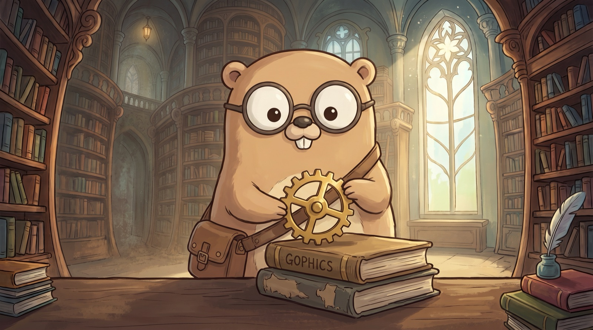
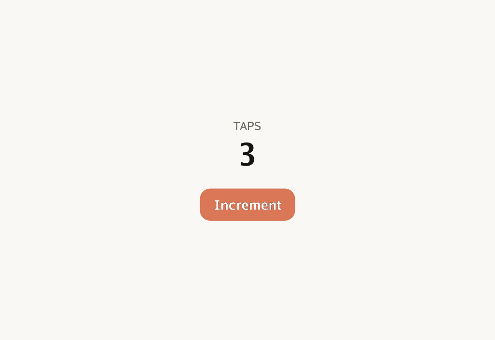

One codebase on desktop, web, iOS, Android — even a terminal — and the only app UI you can test headlessly with go test.
Gophics brings the rendering pipeline behind the best cross-platform UIs — immutable widgets, element reconciliation, constraint layout, GPU compositing — to idiomatic Go, and draws every pixel itself, so it looks the same on every screen. No Dart, no JavaScript, no webview, no SDK. Zero CGo.
// Counter is a widget: a plain struct value describing what to show.
type Counter struct{ Start int }
func (Counter) CreateState() widget.State { return &counterState{} }
// counterState holds what changes. StateBase[Counter] gives it SetState and a
// typed W() — the current Counter value, with no cast.
type counterState struct {
widget.StateBase[Counter]
n int
}
func (s *counterState) Init(widget.Ctx) { s.n = s.W().Start }
func (s *counterState) Build(ctx widget.Ctx) widget.Widget {
th := theme.Of(ctx)
return widget.Center(widget.Column(
widget.Text{S: "TAPS", Size: th.Type.Caption, Color: th.Muted},
widget.Sized{H: 4},
widget.Text{
S: fmt.Sprintf("%d", s.n),
Size: th.Type.Display,
Font: theme.FontBold,
Color: th.Text,
},
widget.Sized{H: 18},
theme.Button{
Label: "Increment",
Primary: true,
OnTap: func() { s.SetState(func() { s.n++ }) },
},
))
It borrows the architecture behind the best cross-platform UIs, not their APIs — and leans into what Go does that Dart and JavaScript can't.
CGO_ENABLED=0 everywhere. Same code, one static binary — desktop, web, iOS, Android, even a terminal — pixel-identical. GOOS=windows go build from a Mac. No runtime, no webview.
Gophics is a go.mod line. Pop a window from a CLI, embed a live UI in a server, add a viz pane to a pipeline — the programs an app-owning SDK can't serve. And platform services — file picker, share, notifications, clipboard, secure storage, IME — are plain ctx.<Cap>() calls that degrade cleanly where a host doesn't offer them.
go testGolden-image tests, headless and deterministic. A server can render a widget tree straight to a PNG. No emulator, no device farm — assert on your UI like any other code.
Go end to end — no codegen, no context-switch. You inherit Go's infra, data, and networking ecosystem, which is exactly where these apps live.
Most cross-platform stacks make you pick two of three. Gophics takes the corner nobody else occupies.
Wails, Tauri, Electron — near-single-binary, but you write JS/HTML and inherit each platform's webview quirks.
React Native — real OS widgets, but a JS bridge and per-platform inconsistencies to chase.
Flutter, Compose — pixel-perfect and consistent, but a whole SDK and a new language.
Pure Go, own-rendering, single-binary, headless-testable — that consistency, without leaving Go.
Young and moving fast — so, the real caveats up front (the architecture is the hard part, and it's done):
A WASM build carries the whole rendering stack — 3.1–5.0 MB gzipped across every demo here, so your own code is a rounding error on it. That is an application download, not a web-page one: right for an app, wrong for a content site.
Go can't match the Dart VM — the answer is fast rebuild + an opt-in state snapshot ("hot restart that remembers") and headless preview. Not sub-second; close.
You compose primitives rather than assemble hundreds of pre-built widgets. It grows every release, and app-specific widgets are cheap to write.
The capability layer — clean Go interfaces, generated wiring, graceful degradation — ships and its web impls are browser-verified; the native desktop/mobile leaves (objc, portals, COM, Kotlin, Swift) land per release. Missing bridges read as nil, so the UI just hides the affordance.